Muzyka od zawsze była ważnym elementem aborygeńskiej kultury.
Najpopularniejszym i najbardziej unikalnym tradycyjnym instrumentem jest didgeridoo, rodzaj naturalnej drewnianej trąbki.
Ma kształt rury, zazwyczaj o długości od 1 do 1,5 m i jest wykonywany, przynajmniej w autentycznej i tradycyjnej formie, z lokalnych odmian eukaliptusów.
Didgeridoo wydaje charakterystyczny buczący dźwięk; został zaadoptowany przez wielu muzyków spoza obszaru tradycji aborygeńskiej.
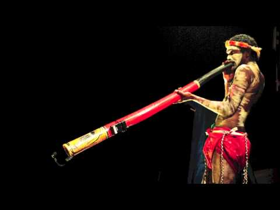
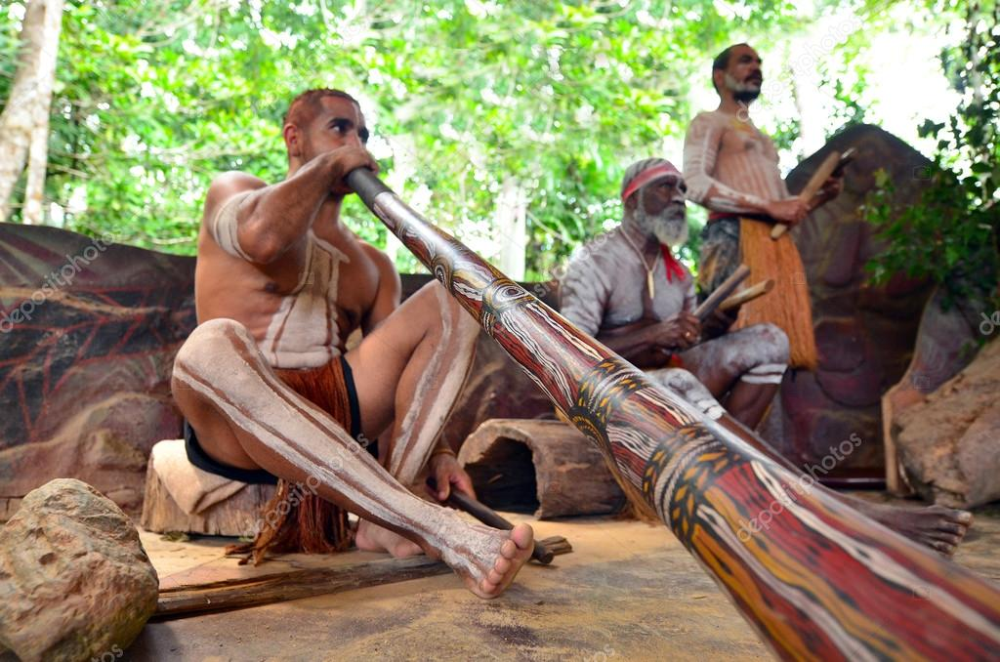
Ślub
Jeżeli chodzi o tradycje weselne to są one podobne jak w Polsce.
Zwyczajowo tradycyjna suknia ślubna była koloru białego i tak jest nadal po dziś dzień.
Tradycyją jest również, że para młoda otrzymuje Biblię jako prezent ślubny.
Małżeńska Biblia jest skarbem rodzinnym i często przekazywana jest z pokolenia na pokolenie.
Wesele
W weselu biorą udział wszyscy członkowie rodziny Panny Młodej i Pana Młodego.
Wszystkie nieporozumienia w tym dniu są odkładane na bok tak, aby Młodzi mogli rozpocząć szczęśliwe wspólne życie.
Wiele Australijskich tradycji zostało zaczerpniętych z Anglii, ale także ze Szkocji i Irlandii jak również ze zwyczajów rdzennych mieszkańców.
Jedyną rzeczą jaka od wieków się nie zmieniła to wymiana obrączek pomiędzy młodymi.
Obrączka jest perfekcyjnym kołem bez początku i końca.
Tak jak w większości krajów symbolizuje niekończącą się miłość.
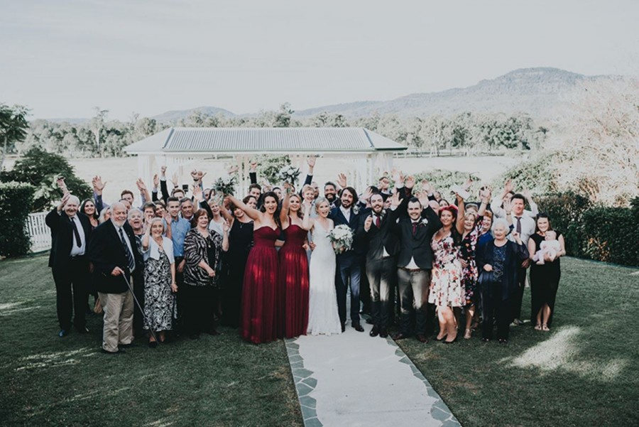
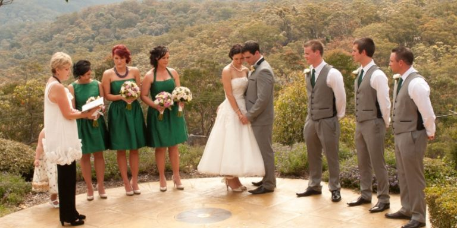
Święto Narodowe
26 stycznia to Dzień Australii, który jest wspólnym świętem całego narodu australijskiego,
w tym czasie odbywa się bardzo wiele specjalnych (nie tylko oficjalnych) uroczystości w całym kraju jak: uroczyste wciąganie flag,
salwy armatnie i fajerwerki, ceremonie nadawania obywatelstwa, prezentacje ważnych społecznych nagród oraz imprez sportowych i społecznych.
Większość społeczeństwa w Australii uważa, ze celebrowanie Narodowego Dnia Australia ma doniosłe i ważne znaczenie.
Jednak ludności pochodzenia aborygeńskiego ta data kojarzy się z najazdem białej ludności na ich kraj i zniszczeniem ich kultury.
Dla czarnej ludności 26 stycznia jest Dniem Żałoby.
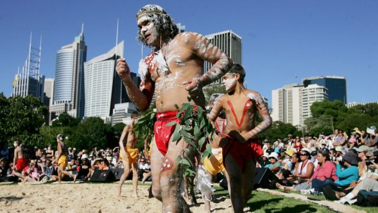
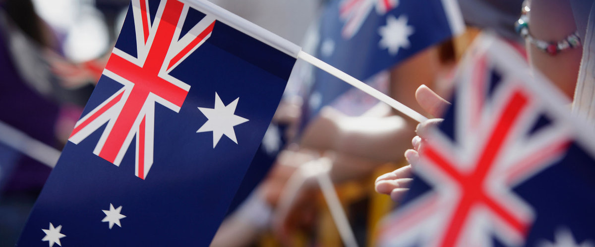
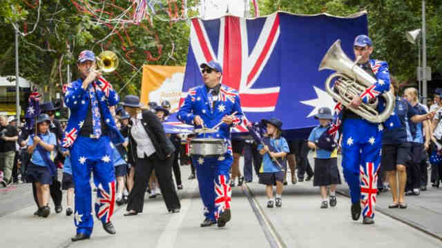
Boże Narodzenie
Typowo australijskim zwyczajem podczas Bożego Narodzenia jest "Carols by Candellight", kiedy to w wieczór wigilijny,
do jakiegoś okolicznego parku schodzą się całe rodziny z całej okolicy i wszyscy razem śpiewają kolędy przy blasku świec.
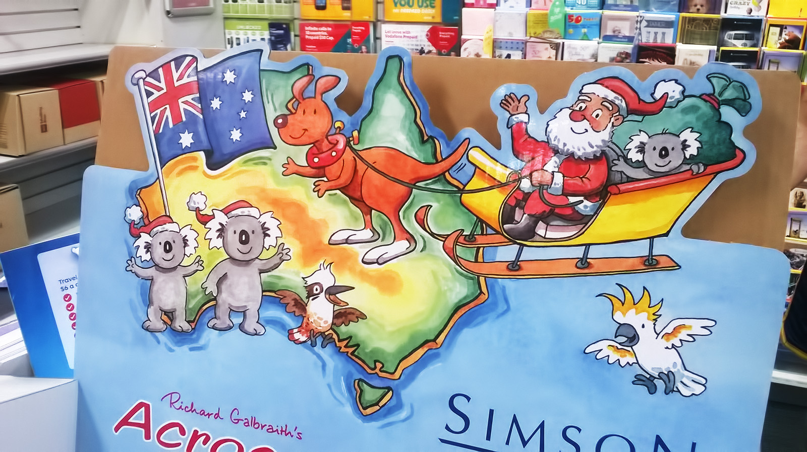
Obyczaje
Australijczycy uważają siebie samych za ludzi otwartych, naturalnych i swobodnych.
Zwracają się do siebie po imieniu, a nowo poznane osoby witają uściskiem dłoni, zaś swoich przyjaciół przytuleniem i pocałunkiem w policzek.
Kolokwialne g’day (good day) jest natomiast najczęstszym pozdrowieniem, a kontakt wzrokowy pomiędzy rozmówcami jest jak najbardziej pożądany,
gdyż świadczy o wzajemnym szacunku.
W kulturze aborygeńskiej to właśnie odwracanie wzroku od rozmówcy jest wyrazem szacunku.
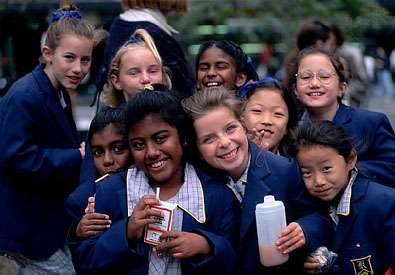
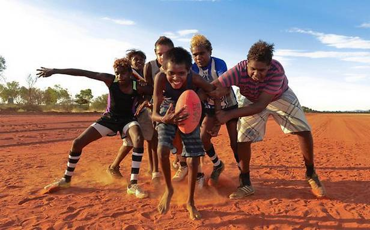
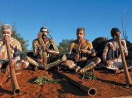
Wyznania i języki
Australia jest krajem, w którym nie ma religii państwowej.
Dane z 2001 roku wskazują, iż 68% Australijczyków to chrześcijanie, w tym 27% to katolicy, zaś 21% identyfikuje się jako anglikanie.
Religie niechrześcijańskie wyznaje 5% populacji. Brak wyznawanej religii deklaruje 16% mieszkańców.
Oficjalnym językiem jest angielski, a dokładniej jego lokalna, australijska odmiana.
Język ten jest używany przez blisko 80% populacji, zaś inne języki jakimi posługuje się ludność to chiński, włoski, i grecki, natomiast znaczna część imigrantów jest dwujęzyczna.
Początkowo, do czasu kiedy Australia po raz pierwszy skontaktowała się z Europą, funkcjonowało 200 – 300 języków australijskich Aborygenów.
Do dziś zachowało się już niestety tylko 70, z czego 50 jest zagrożonych.